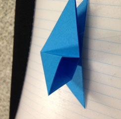
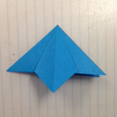
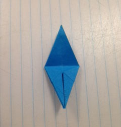
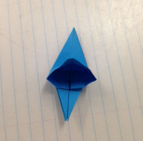
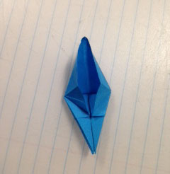
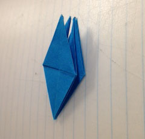
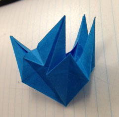
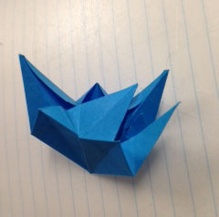
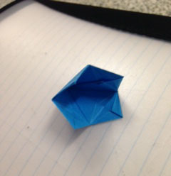

Bell Flower
This is a more complex, harder to make flower.
This particular unit will be made with Base 2
Start with your completed Base 2, and fold the left edge to the centre crease.

Unfold, and open the bottom of the top layer, as shown:
Flatten down the fold, so that the crease that was your edge now lines up with the centre crease.

You should end up with something like this:
Repeat steps 1 - 4 for each side, until you have something like this:

Now fold your left edge inward, toward the centre crease.
Do the same with the right edge.

Repeat steps 6 and 7 for each side. Your unit should look like this:
Now fold the top point down to meet the bottom point. This crease will be very helpful later.

Unfold. You should have something like this:
Now, unfold your edges.
Take the bottom point of your unit by the top layer, and open it, pulling it upward as you do so.
It should start to look something like this:

Align your bottom point with the top, and flatten your fold.
Repeat steps 8 - 14 for each side. Your unit should look something like this.

Rotate your unit 180 degrees, so that the points are at the bottom.

Fold the point upward, as far as it will go.

Repeat this for each of the other points.
Now, take your unit, and open it from the top, just a little. it should look like this:
Grab one of the points, and fold it down to the inside bottom of the unit. This process can be confusing,
so I have provided a link to another origami website that has additional instructions.

As you fold your point inward, your unit should start to look like this:

Your unit should look like this from the inside:

Repeat steps 19 - 22 for each side. Your unit should end up looking like this:
If you would like, you can take the tips of the petals, and curl them around a pencil.


For additional instructions on folding the bell flower, click here